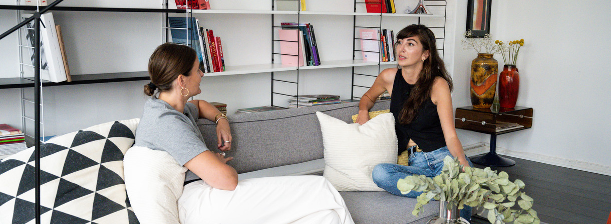
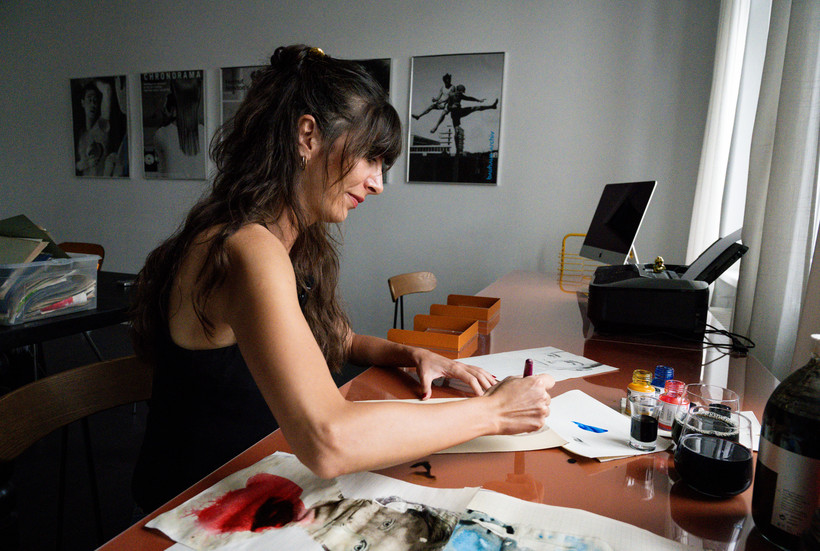
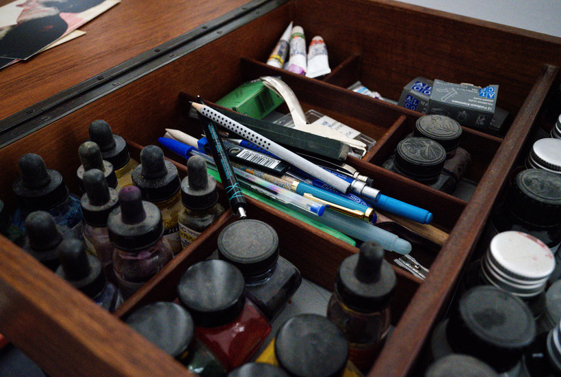
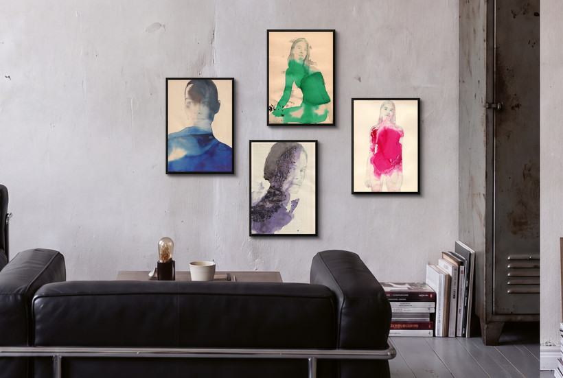
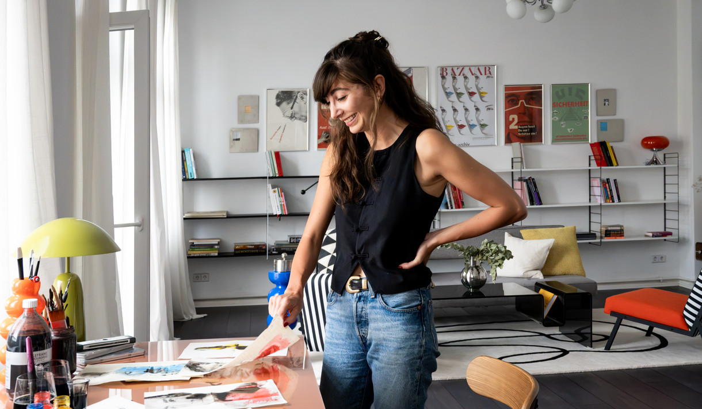
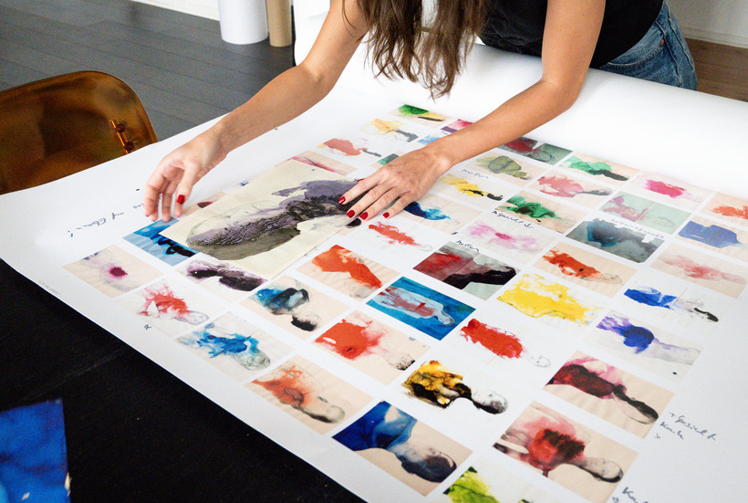
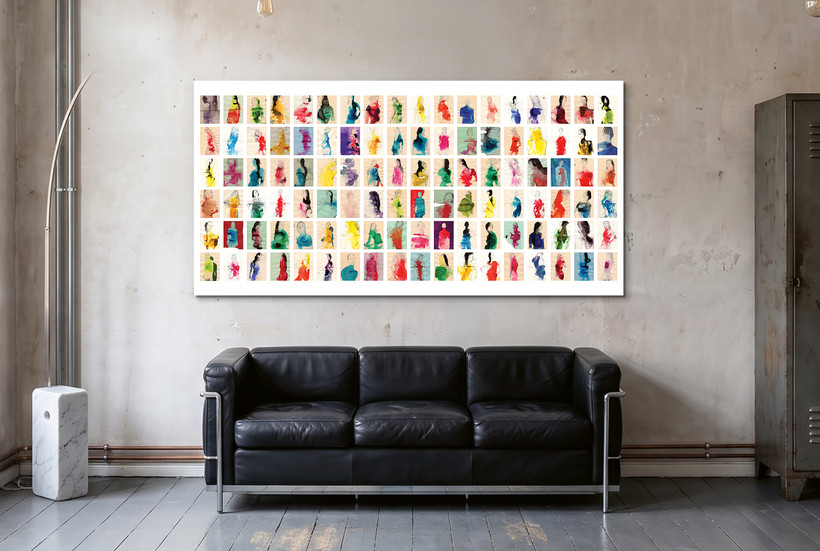
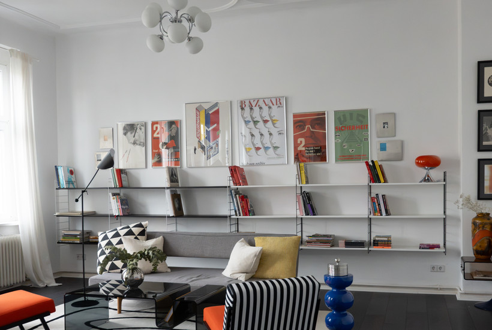

Open studio: a visit with Marianna Gefen
Marianna Gefen has been painting since she was five. Today, she teaches Fine Art herself. Her work appears in galleries around the world and in leading publications from The New York Times to Vogue. A conversation about her fear of the white page, the personality of old paper and why sometimes the best thing an artist can do is stop.



Where do you find the paper?
I travel a lot. In Spain it was flea markets. In Berlin, old East German paper, school notebooks, pads. You are never starting from zero, there is already a personality in the sheet, a history. If someone posts that they have fifty pads, I buy them like a madwoman.




All works by Marianna Gefen
The twelve editions render here, filtered to the MGF prefix. The grid stays empty until the works go online, then fills on its own.